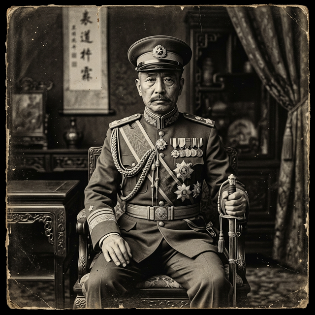

張作霖
東北王的生存法則：夾縫中的豪賭
在傳統史觀中，他被描繪為沒有文化、依附日本的土匪軍閥。但在真實歷史裡，他堪稱近代中國最頂尖的地緣平衡大師。在日俄兩大帝國的夾縫中，他憑藉極致的實用主義與「陽奉陰違」，不僅保全了東北的主權底線，更締造了當時中國最富庶的黃金時代。
📂 檔案閱覽室
真實史實：歷史現場的另一面
點擊下方卡片，對比傳統歷史課本與被掩蓋的歷史真相。
歷史課本說： 張作霖只是一個沒文化的土匪軍閥，靠著出賣東北利益給日本才當上東北王，是個走狗。
點擊解密檔案 ➔解密真相： 他的「親日」是夾縫求生的策略。他深知東北無法同時對抗日俄，因此表面妥協換取支援，暗中卻屢屢抵制日本核心要求（如拒簽條約），甚至自籌資金修築中國自己的鐵路網，打破日本「南滿鐵路」的壟斷。
點擊翻回課本歷史課本說： 張作霖統治下的東北是黑暗的軍閥割據時期，民不聊生，阻礙了中國統一。
點擊解密檔案 ➔解密真相： 在他的治理下，東北成為當時中國工業化程度最高、最富庶的地區。他建立了全國最大的兵工廠與最強的海空軍，還創辦了東北大學。穩定的社會環境吸引了數百萬人「闖關東」。
點擊翻回課本歷史檔案館藏閱讀室

張作霖
(1875 - 1928)
地緣平衡大師大國博弈與東北的黃金時代
極致的地緣實用主義： 綠林出身的張作霖，面對日本與蘇俄對滿洲的強烈野心，採取了「兩面三刀」的策略。他利用日本防堵蘇俄，又利用英美牽制日本。他經常口頭答應日本的要求以換取軍火，但事後卻以「民意反對」為由賴帳不履行，讓日本軍部對他恨之入骨。
富國強兵的現代化建設： 他極度重視教育與實業，奉天（瀋陽）兵工廠是當時亞洲數一數二的現代化體系。他興建的東北鐵路網，直接挑戰了日本的經濟霸權。東北在他治下，成為戰亂中國唯一一塊保持高速發展的樂土。
皇姑屯的悲歌： 1928年，北伐軍逼進北京。日本軍部威脅他宣布東北獨立。張作霖斷然拒絕分裂中國，最終在退回瀋陽的專列上，被日本關東軍暗殺於皇姑屯。他在民族大義的最後關頭，用生命證明了自己不是日本的走狗。
📚 權威學術文獻參考
- 唐德剛，《張學良口述歷史》
- Gavan McCormack (加文·麥柯馬克)，《張作霖在東北》
命運結算
你的最終歷史定位：